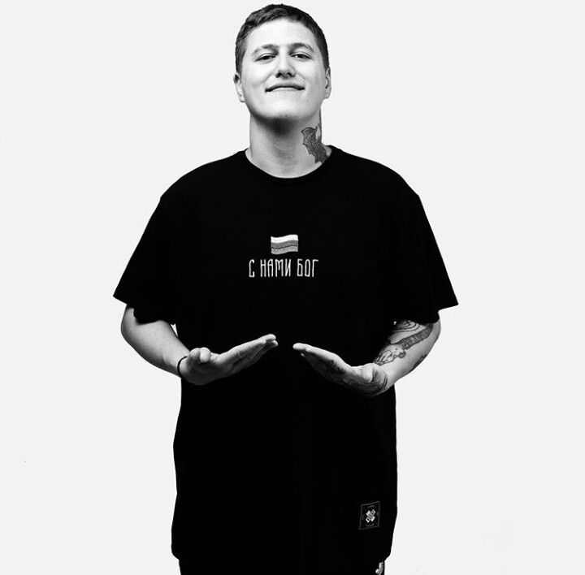
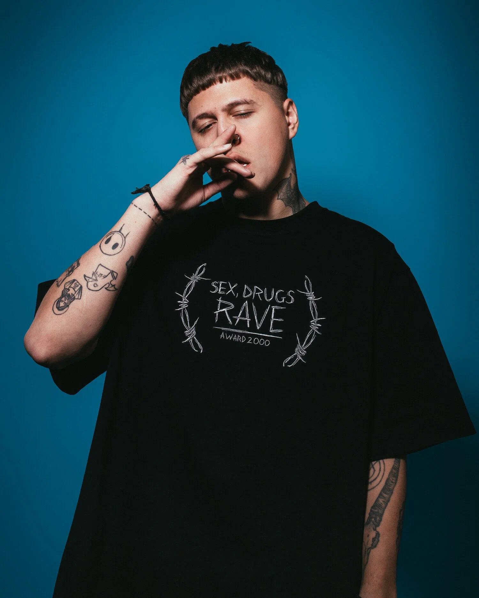

Руслан CrazyMegaHell (CMH)
Руслан Тушенцов
Руслан родился 23 декабря 1995 года в Ачинске, рос без отца. Отец погиб в аварии за неделю до его рождения. В старших классах у него начали случаться нервные тики, а позже подтвердилось, что у него синдром Туретта, из-за синдрома ему пришлось перейти на домашнее обучение и отказаться от мечты стать хирургом или патологоанатомом. Также известно, что у Руслана присутствует эпилепсия и непереносимость лактозы.
